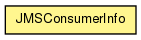

org.hornetq.api.jms.management
Class JMSConsumerInfo
java.lang.Object
 org.hornetq.api.jms.management.JMSConsumerInfo
org.hornetq.api.jms.management.JMSConsumerInfo
public class JMSConsumerInfo
- extends Object

Helper class to create Java Objects from the
JSON serialization returned by JMSServerControl.listConsumersAsJSON(String) and related methods.
- Author:
- Jeff Mesnil
from
public static JMSConsumerInfo[] from(String jsonString)
throws Exception
- Returns an array of SubscriptionInfo corresponding to the JSON serialization returned
by
TopicControl.listAllSubscriptionsAsJSON() and related methods.
- Throws:
Exception
getConsumerID
public String getConsumerID()
getConnectionID
public String getConnectionID()
getDestinationName
public String getDestinationName()
getDestinationType
public String getDestinationType()
isBrowseOnly
public boolean isBrowseOnly()
getCreationTime
public long getCreationTime()
isDurable
public boolean isDurable()
- Returns:
- the durable
getFilter
public String getFilter()
Copyright © 2009 Red Hat Inc. All Rights Reserved.